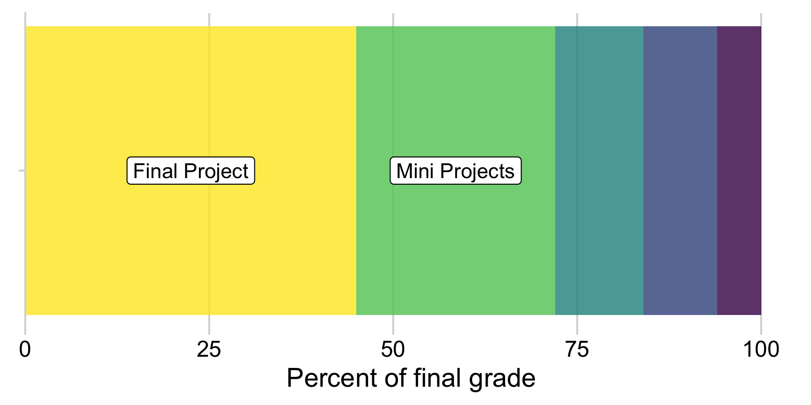

Syllabus
Course Information
| Instructor | Course |
|---|---|
| John Paul Helveston | Wednesdays |
| Science & Engineering Hall, 2830 | 1776 G St C-119 |
| +1 (202) 994-7173 | Aug. 29 - Dec. 12, 2022 |
| jph@gwu.edu | 12:45PM - 3:15PM EST |
| @JohnHelveston | Slack |
COVID-19 Precautions
Please help us all stay safe so we can continue having in-person classes. Please wear a mask in class, and wash your hands often. If you’re sick, stay home and send me a message, we’ll work it out. Let’s work together on this folks.
Course Description
GW Bulletin Description (short)
Introduction to exploratory data analysis using the R programming language; data visualization, data cleaning, exploratory analysis, information communication, rmarkdown, reproducibility.
Unofficial Description
This course provides students with a foundation in exploring data using the R programming language. Students will learn how to source, manage, transform, and explore a wide variety of data types. Students will also master the fundamental concepts for visualizing and communicating information contained in raw data, including the human psychology of visual information processing. All analyses will be conducted to support reproducibility from raw data to results using RMarkdown. Teaching will involve interactive lectures with plenty of class time spent working on examples and coding. Students will be assessed through in-class quizzes, reading reflections, and exploratory projects. Throughout the semester, students will work on a research project of their own design to demonstrate mastery of the course’s topics. At the end of the semester, students will submit a final, reproducible report of their project along with a 10-minute video presentation of their findings.
Prerequisites
Students should have taken EMSE 4571: Intro to Programming for Analytics or have experience working with data in at least one programming language. If you’re not sure whether you have the necessary prerequisite skills, you can try and get up to speed by completing this optional course primer assignment before class starts. Once class starts, it may be difficult to keep up without this background, and it may be more beneficial to wait and take this course next year after taking Programming for Analytics.
Learning Objectives
Having successfully completed this course, students will be able to:
- Write a clear, focused, concise, complex, and arguable research question.
- Import, manipulate, clean, visualize, and export data in R.
- Wrangle data from its original format into a fit-for-purpose format.
- Conduct a systematic exploratory data analysis (EDA) of different types of data.
- Apply fundamental principles of visualizing information for exploratory analysis and communication.
- Get data off the web and expose data, code, results on the web.
- Generate fully reproducible reports that contain code, equations, visualizations, and narrative text.
Pep Talk!
Working in and learning a programming language can be as challenging as learning a new spoken language. Hadley Wickham (chief data scientist at RStudio and author of many amazing R packages you’ll be using) made this wise observation:
It’s easy when you start out programming to get really frustrated and think, “Oh it’s me, I’m really stupid,” or, “I’m not made out to program.” But, that is absolutely not the case. Everyone gets frustrated. I still get frustrated occasionally when writing R code. It’s just a natural part of programming. So, it happens to everyone and gets less and less over time. Don’t blame yourself. Just take a break, do something fun, and then come back and try again later.
If you’re finding yourself taking way too long hitting your head against a wall and not understanding, take a break, talk to classmates, ask questions in Slack, and try it again later.
I promise, you can do this
Required Texts & Materials
All texts and software for this course is freely available on the web. This includes:
Software
Go to the Course Software page for detailed instructions on how to install the software we’ll be using. Here’s a quick list:
- R (version 4.1.0 or later), which can be downloaded from The Comprehensive R Archive Network (CRAN)
- RStudio (Desktop Version), a free IDE for R, which can be downloaded from RStudio
- We’ll be using Slack for most communication.
Texts / Other Useful Resources
Each week students will be responsible for completing assigned readings, most of which will come from these three books, which are available both free online and for purchase via the following links:
- Healy, Kieran. “Data Visualization: A practical introduction” [free online], [buy on amazon]
- Grolemund, Garrett and Wickham, Hadley. “R for Data Science” [free online], [buy on amazon]
- Wilke, Claus O. “Fundamentals of Data Visualization” [free online], [buy on amazon]
Assignments
Class Participation
Regular class attendance is essential. Much of the class time will be spent doing exercises and coding. Multiple absences, inappropriate or unprofessional behavior during class (such as monopolizing discussions or being rude or disruptive), not participating in classroom exercises, and not being prepared for class will result in poor performance in this class.
Quizzes
There will be several quizzes given about once every two weeks immediately at the beginning of class. Quizzes cover material presented in previous classes and assignments during the weeks since the most-recent quiz. Quizzes are designed to be time-intensive, to test for fluency, and to demonstrate where additional study is needed. Quizzes are low-stakes - your worst one is dropped, and the rest count for just 15% of your final grade. If you do poorly on one, use that as feedback on where you need additional improvement.
Why quiz at all? Research shows that giving small quizzes throughout a class can dramatically help with retention. It’s a phenomenon known as the “retrieval effect” - basically, you have to practice remembering things, otherwise your brain won’t remember them. The phenomenon and research on it is explained in detail in the book “Make It Stick: The Science of Successful Learning,” by Brown, Roediger, and McDaniel.
Homework
Students will be responsible for two types of assignments throughout the semester:
- Weekly Assignments: Each week, students will be assigned specific readings and exercises to prepare for the next class period. Students will need to submit responses that include a thoughtful reflection on these concepts each week.
- Mini Projects: There will be three mini projects throughout the semester designed to provide hands-on experience with the material covered in class by working with and exploring real data sets and / or creating visualizations. While students may work with their peers on these assignments, each student must submit their own work. Credit for each assignment will be allocated according to a rubric provided in the assignment description.
Final Project
Throughout the semester, students will work in teams of 2-3 students towards a final project of an exploratory data analysis. At the end of the semester, each student will submit a report of their analysis in the form of an html web page and create a 5 to 10-minute video presentation of their results. To make the overall project more manageable, it will be broken down into several separate “milestone” deliverables due throughout the semester, including a proposal, progress report, presentation video, and final report.
View the final project overview page for more details.
Final Interview
Rather than have a final exam, each student will have a 10-minute interview by the instructor. The interview will be focused on the final project the student worked and will contain questions related to concepts covered during the course. Students will be provided a list of questions and the grading rubric ahead of the interview.
Grading
Category Breakdown
Final grades will be calculated as follows:
| Item | Weight | Notes |
|---|---|---|
| Weekly HW | 12 % | |
| Quizzes | 8 % | 5 quizzes, lowest dropped |
| Mini Project 1 | 8 % | Individual assignments |
| Mini Project 2 | 8 % | |
| Mini Project 3 | 8 % | |
| Final Project: Proposal | 9 % | Teams of 2-3 students |
| Final Project: Progress Report | 12 % | |
| Final Project: Report | 16 % | |
| Final Project: Presentation | 9 % | |
| Final Interview | 10 % | Individual interview |
Here’s a visual breakdown by category:

Grading Scale
| Grade | Range | Grade | Range |
|---|---|---|---|
| A | 94 - 100% | C | 74 - 76.99% |
| A- | 90 - 93.99% | C- | 70 - 73.99% |
| B+ | 87 - 89.99% | D+ | 67 - 69.99% |
| B | 84 - 86.99% | D | 64 - 66.99% |
| B- | 80 - 83.99% | D- | 60 - 63.99% |
| C+ | 77 - 79.99% | F | < 60% |
The course instructors may choose to change the scales at their discretion. You are guaranteed that your letter grade will never become worse as a result of changing scales.
Getting Help
This class can be challenging - do not suffer in silence! We have lots of ways to get help.
Slack
All course communication will be managed through Slack. A link to sign up for the course slack page can be found on the one (and only) announcement on Blackboard.
You can use Slack to:
- Ask general questions.
- Ask for help with an assignment.
- Send direct, private messages to each other or the instructors (just like email…but better!)
Asking for help on Slack:
You can post questions on slack and receive quick responses. This also enables other students to see answers to common questions. Be specific - if your code has an error you don’t understand, include the code and the error message in your question.
Office hours
Scheduling a time to answer questions is hard, so rather than hold regular office hours, you can use this link to schedule a zoom call with me most days of the week.
Tutoring hours
Your class tutors will each hold a dedicated period of time each week for zoom tutoring hours. Please don’t make your tutors sit and do emails for two hours - come by and ask for help!
Library Services
While the University Library is not a stand in for TAs, you can schedule a consultation for general help with Coding, Programming, Data, Statistical, and GIS. See more at https://academiccommons.gwu.edu/writing-research-help
Course Policies
tl;dr
- BE NICE. BE HONEST. DON’T CHEAT.
- You get 5 late days - use them however you want, but you can’t use more than 2 late days on any one assignment.
- If you’re not sure about something, talk with me and we’ll figure it out.
Late Policy
Each students is allowed 5 late homework submission days - use them however you want, no questions asked. No more than 2 days can be applied toward a single assignment. Late days are meant to cover illness, family emergencies, and religious holidays. Assignments submitted more than 2 days after the due date will not be graded. In extreme circumstances, contact the instructor.
Cheating
Cheating results in a penalty on the first offense, and failing the course on the second offense. Cheating on assignments can include:
- Copying or stealing any amount of code from someone currently in the class or someone who has taken the class before.
- NOTE: Copying is never okay, whether the code is provided electronically, visually, audibly, or on paper.
- Providing code you have written for an assignment to anyone else in the class.
- Finding code online and using it in the assignment. One exception: you may use code from the course website.
- Putting code solutions from the course assignments online.
- Receiving code-level assistance from any person not associated with the course.
- Getting someone else to write the assignment code for you.
- Asking questions about the assignments on any online services outside of the course office hours / Slack.
Cheating on quizzes, assignments, or the final project can include:
- Referring to any external resources while completing the assignment (phones, notes, etc.).
- Copying part of an answer off of another student’s paper, even if it is very small.
- Using solutions provided by students who previously took the course.
Penalties
Violations will be reported to the Office of Student Rights & Responsibilities. Penalties are decided by the course instructors, and can vary based on the severity of the offense. Possible penalties include:
- Receiving a 0 on the assignment/quiz in question.
- Receiving a full letter grade deduction in the course.
- Automatically failing the course.
Depending on the student’s prior academic history, violations may also be accompanied by a letter to the Dean of Student Affairs, again at the instructors’ discretion. This can lead to university-level penalties, such as being suspended or expelled.
Children in class
I applaud all of you who attend school with children! It is difficult to balance academic, work, and family commitments, and I want you to succeed. Here are my policies regarding children in class:
- All breastfeeding babies are welcome in class as often as necessary.
- Non-nursing babies and older children are welcome whenever alternate arrangements cannot be made. As a parent of young children, I understand that babysitters fall through, partners have conflicting schedules, children get sick, and other issues arise that leave parents with few other options.
- In cases where children come to class, I invite parents/caregivers to sit close to the door so as to more easily excuse yourself to attend to your child’s needs. Non-parents in the class: please reserve seats near the door for your parenting classmates.
- All students are expected to join with me in creating a welcoming environment that is respectful of your classmates who bring children to class.
I understand that sleep deprivation and exhaustion are among the most difficult aspects of parenting young children. The struggle of balancing school, work, childcare, and graduate school is tiring, and I will do my best to accommodate any such issues while maintaining the same high expectations for all students enrolled in the class. Please do not hesitate to contact me with any questions or concerns.
Lauren’s Promise
I will listen and believe you if someone is threatening you.
Lauren McCluskey, a 21-year-old honors student athlete, was murdered on October 22, 2018 by a man she briefly dated on the University of Utah campus. We must all take action to ensure that this never happens again.
If you are in immediate danger, call 911 or GWU police at 202-994-6111 (GWPD).
If you are experiencing sexual assault, domestic violence, or stalking, if you report it to me I will listen and connect you to resources or call GWU’s Counseling and Psychological Services (202-994-5300).
Any form of sexual harassment or violence will not be excused or tolerated at GWU. GWU has instituted procedures to respond to violations of these laws and standards, programs aimed at the prevention of such conduct, and intervention on behalf of the victims. GWU Police officers will treat victims of sexual assault, domestic violence, and stalking with respect and dignity. Advocates on campus and in the community can help with victims’ physical and emotional health, reporting options, and academic concerns.
Use of Course Materials
All course materials available on the course website are developed open source - you are welcome to post and share them following the licensing guidelines listed in the license page.
However, all solutions to assignments and quizzes are proprietary. Don’t post them online or try to sell them - this is a violation of the student code of conduct.
What To Do if the Instructor Does Not Arrive
Wait 20 minutes, after that you’re free to leave. One member of the class should be selected to notify the EMSE Department of the Instructor’s absence by calling the EMSE Department 202-994-4892 on next business day.
University Policies
University Policy on Religious Holidays
In accordance with University Policy, students should notify faculty during the first week of the semester of their intention to be absent from class on their day(s) of religious observance. Official university policy here: https://students.gwu.edu/accommodations-religious-holidays
- Students should notify faculty during the first week of the semester of their intention to be absent from class on their day(s) of religious observance.
- Faculty should extend to these students the courtesy of absence without penalty on such occasions, including permission to make up examinations.
- Faculty who intend to observe a religious holiday should arrange at the beginning of the semester to reschedule missed classes or to make other provisions for their course-related activities.
Support for Students Outside the Classroom
Disability Support Services (DSS): Any student who may need an accommodation based on the potential impact of a disability should contact the Disability Support Services office at 202-994-8250 in the Rome Hall, Suite 102, to establish eligibility and to coordinate reasonable accommodations. For additional information please refer to: https://disabilitysupport.gwu.edu/
Mental Health Services (202-994-5300): The University’s Mental Health Services offers 24/7 assistance and referral to address students’ personal, social, career, and study skills problems. Services for students include: crisis and emergency mental health consultations confidential assessment, counseling services (individual and small group), and referrals. https://healthcenter.gwu.edu/counseling-and-psychological-services
Academic Integrity Code
Academic dishonesty is defined as cheating of any kind, including misrepresenting one’s own work, taking credit for the work of others without crediting them and without appropriate authorization, and the fabrication of information. For the remainder of the code, see: https://studentconduct.gwu.edu/code-academic-integrity
In addition to the formal code of academic integrity, the instructor expects that students will treat this course with the level of professionalism required in the workplace. Remember that real firms are sponsoring student projects throughout the semester; in a workplace setting, these firms would be paying clients for the analyses being conducted. This course prepares students to succeed in the workplace, and maintaining a high degree of professionalism is expected.
Super Heros

Once you have read this entire syllabus and viewed the course schedule, please send me a picture of your favorite super hero in a direct message on Slack.
For real.
Brownie points if it’s animated.
Page sources:
Some content on this page is inspired by and / or modified from other sources:
- The “Pep Talk” and “Super Heros” sections are inspired by Andrew Heiss’s course Program Evaluation For Public Service
- The cheating policy is modified from the course 15-112 at Carnegie Mellon University